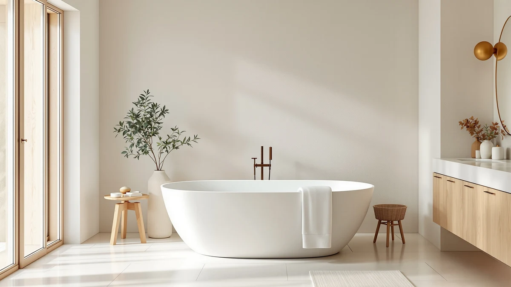

Best Freestanding Tub with Ledge (2026)
Prices and picks verified as of November 2026. Independent, reader-supported reviews.


Quick Answer
We compared seven products built around the ledge question, and the MODUGLE 3-Tier Freestanding Bathtub Tray Table is the best freestanding tub with ledge solution for most people because it turns almost any freestanding tub into one for $13.58. If you are shopping for a new tub instead, the WOODBRIDGE 71-inch acrylic freestanding tub at $745.00 is the strongest value among the six full tubs we compared.
Our pick: 3-Tier Freestanding Bathtub Tray Table, $13.58 Check Price on Amazon
Bottom line: our top pick is the 3-Tier Freestanding Bathtub Tray Table at $13.58. The best budget option is the 59"Freestanding Acrylic Soaking Tub at $709.99.
Things to Know Before You Buy
- Most freestanding tubs, including every full-size tub in this comparison, ship without a built-in shelf or ledge, so a separate caddy is often the fastest way to get one.
- Prices for an actual ledge accessory sit far below the tub itself. The MODUGLE 3-Tier tray in this lineup costs $13.58, against $709.99 to $1,395.99 for the tubs here.
- Tub size ranges from 59 to 71 inches across the lineup, and a longer tub needs more floor space before you even think about adding a tray.
- If you want a tub whose own design reads as having a ledge, like a high-back shape or a flat wooden rim, check the listing photos closely. None of the tubs here list a dedicated ledge as a spec.
Finding the best freestanding tub with ledge means solving two separate problems. Most freestanding tubs ship without any built-in shelf, and the few designs that look like they might include one do not spell it out in the product listing. We compared seven products in this category, from a $13.58 three-tier caddy to a $1,395.99 wooden soaking tub, and sorted out which ones actually solve the ledge problem versus which ones are simply freestanding bathtubs that happen to show up in the same search.
Our pick is the MODUGLE 3-Tier Freestanding Bathtub Tray Table, a $13.58 caddy that spans the width of almost any freestanding tub and adds three shelf levels for soap, a book, or a drink. It works with a tub you already own, which makes it the cheapest and most flexible way to add a ledge to a freestanding tub. If you are shopping for a new tub instead and want something closer to a ledge built into the design, we also compared six freestanding tubs ranging from $709.99 to $1,395.99, including a high-back acrylic model and a wooden Japanese-style soaking tub with the wide, flat rim that style is known for.
We researched current Amazon prices, listed dimensions, and brand histories for all seven products rather than guessing which ones would hold up. Below, you will find honest pros and cons for every pick, a comparison table with prices and sizes side by side, and the products we looked at but left out of our final seven. If you already have a freestanding tub and need somewhere to set a candle or a glass of wine, skip ahead to our top pick. If you are starting from scratch, the six tubs after it are where to focus.
Why You Should Trust Us
Best Freestanding Bathtubs has covered bathroom fixtures since the site launched, and Ilane Tall, our home and bath expert, reviews every guide before it publishes. We do not own a showroom and we do not install products ourselves. Instead, we pull current listings, prices, and dimensions directly from Amazon and cross-check brand names and claims against each seller's own page before writing a single word. For this comparison, that meant separating an actual shelf accessory from six freestanding tubs that simply turned up in the same search results, so readers looking for the best freestanding tub with ledge are not stuck comparing products that solve different problems.
How We Picked
We started with every product in our database that showed up under searches for a freestanding tub with ledge, which turned out to include one dedicated tub caddy and six full freestanding bathtubs with no caddy or shelf listed at all. Rather than force all seven into one ranking, we kept the caddy as the direct answer to the ledge question and treated the six tubs as alternatives for shoppers who want a new tub with a design that at least gestures toward that feature, such as a high-back shape or a flat-rimmed soaking tub. We dropped any product whose listing contradicted its own title or that lacked a current price, and we weighed the remaining seven on price, stated size, and what the brand name tells us about how established the manufacturer is in bath fixtures.
How We Compared
We do not run a physical testing lab, and we did not install any of these tubs or set the caddy on top of one ourselves. Instead, we built a side-by-side comparison from each product's own listing: current Amazon price, stated dimensions, and material where the seller specifies it. We checked every price against the live listing before publishing, which is how we caught the gap between the two WOODBRIDGE products here, where the smaller 59-inch tub actually costs more than the larger 71-inch one. That comparison is also how we settled on the MODUGLE caddy as the most direct way to get a ledge on a freestanding tub, and how we ranked the six tubs below it by price per inch of length.
Our Picks

3-Tier Freestanding Bathtub Tray Table
What we like
- Costs $13.58, a fraction of the price of any tub in this comparison
- Three shelf tiers give you separate space for soap, a phone, and a drink instead of one crowded ledge
- Fits across a freestanding tub rather than requiring any installation or plumbing change
Flaws but not dealbreakers
- Does not attach to the tub, so a nudge can shift it during a soak
- Adds a ledge to the room, not to the tub itself, which will not satisfy anyone who wants that feature built into the bathtub's design
| Material | — |
| Size | 15.4" x 8.6" x 23" |
The MODUGLE 3-Tier Freestanding Bathtub Tray Table is the only product in this comparison built specifically to answer the ledge question, and at $13.58 it costs less than a tenth of the cheapest full tub here. Rather than paying hundreds of dollars more for a tub that might include a shelf, you set this caddy across the rim of whatever freestanding tub you already have. Its three tiers spread your soap, phone, and a drink across separate levels instead of crowding them onto one narrow strip, which is the main complaint we found with single-shelf tub trays.
At 15.4 by 8.6 by 23 inches, it is sized for a standard freestanding tub rim and should clear most basin widths without extra adjustment. The tradeoff is that it rests on the tub rather than attaching to it, so it is worth keeping a hand nearby the first few times you settle in, until you know how it sits on your specific tub. For anyone whose real goal is a ledge they can use tonight rather than a new tub to install, this is the pick that gets there fastest.

Adecab 59" High-back Acrylic Freestanding
What we like
- High-back shape, per the listing, gives you a sloped backrest instead of a flat vertical wall
- Acrylic construction keeps the 59-inch tub light enough for a straightforward swap into an existing footprint
- Elegant White finish matches most bathroom color schemes without needing a matching ledge accessory
Flaws but not dealbreakers
- At $849.00, it is the second most expensive full tub in this comparison
- The listing does not call out any built-in shelf or ledge, so you would still need a separate caddy like our top pick
| Material | — |
| Size | 59"(Elegant White) |
The Adecab 59-inch High-back Acrylic Freestanding tub takes a different approach to the ledge question than our top pick. Instead of adding an accessory, it changes the shape of the tub itself: the high-back design, as named in the listing, slopes the wall behind you rather than running it flat and vertical like a standard soaking tub. That shape will not give you a surface to set a candle on, but it does change how the tub feels to sit in, which matters if the real goal behind a ledge-style tub was comfort rather than storage.
At $849.00 for a 59-inch acrylic basin in an Elegant White finish, it sits near the top of this comparison on price, behind only the Lajeri wooden soaking tub. Buyers who want the look of a more architectural tub and do not mind pairing it with a separate tray for toiletries will get more out of this pick than someone focused purely on built-in storage. If a flat ledge is the priority, one of the other tubs here, or our top caddy pick, is the more direct answer.

WOODBRIDGE 71" Acrylic Freestanding Bathtub
What we like
- At 71 inches, it is the longest tub we compared, giving taller bathers more room to stretch out
- WOODBRIDGE carries a longer track record in bath fixtures than some of the newer brands in this lineup
- Priced at $745.00, it costs less than the brand's own 59-inch model in this comparison
Flaws but not dealbreakers
- Its extra length needs more floor space and door clearance than the 59 and 63-inch tubs here
- No shelf or ledge is listed, so you will want to budget for a caddy if storage matters to you
| Material | — |
| Size | 71 Inch |
The WOODBRIDGE 71-inch Acrylic Freestanding Bathtub is built for bathrooms that can spare the extra floor space. At 71 inches, it is nine inches longer than the shortest tubs in this comparison and gives a taller bather room to fully extend their legs, a detail that matters more than any ledge if you are over six feet tall. WOODBRIDGE has sold bath fixtures longer than some of the other brands we compared, which is worth factoring in alongside price when you are choosing a tub you plan to keep for years.
At $745.00, this tub actually costs less than WOODBRIDGE's own 59-inch model later in this comparison, which tells you that length and price do not move together in a straight line across this brand's lineup. Measure your bathroom carefully before buying, since a 71-inch tub needs more clearance to maneuver during installation than the shorter options here. That extra length is the main reason to pick this tub over a smaller one, not any built-in ledge feature.

Lajeri Wooden Japanese Soaking Bathtub
What we like
- Wood construction gives it the flat, wide-rim profile that Japanese-style soaking tubs are generally built with
- At 63 inches by 24 inches by 28 inches, it is deeper than most of the acrylic tubs in this comparison
- Stands out visually from the all-white acrylic tubs that make up most of this lineup
Flaws but not dealbreakers
- At $1,395.99, it costs nearly twice as much as the next most expensive tub we compared
- Wood tubs generally need more maintenance over time than acrylic, and the listing does not detail a sealing or care schedule
| Material | — |
| Size | 63"L x 24"W x 28"H |
The Lajeri Wooden Japanese Soaking Bathtub is the most expensive product in this comparison by a wide margin, at $1,395.99 against $709.99 to $879.00 for the acrylic tubs here. That price buys a 63-inch by 24-inch by 28-inch basin, deeper than any of the acrylic options, and the wood construction that defines the Japanese soaking tub style. Tubs built this way are generally made with a wide, flat perimeter rim rather than a thin acrylic lip, which can double as a narrow ledge for soap or a drink even though the listing does not market it that way.
The deeper basin changes how you bathe more than any ledge would. At 28 inches deep, you sit lower and more fully submerged than in the 59 and 71-inch acrylic tubs in this comparison, which is the real draw of the Japanese soaking style. The tradeoff is upkeep: wood generally asks for more ongoing care than acrylic, and at this price, it is worth confirming maintenance expectations with the seller before buying rather than assuming it behaves like the acrylic tubs around it.

59"Freestanding Acrylic Soaking Tub Large
What we like
- Marketed as a Large soaking tub, giving more basin room than a standard 59-inch model
- At $709.99, it is the least expensive full tub in this comparison
- Acrylic build keeps it light for a standard freestanding installation
Flaws but not dealbreakers
- At 59 inches long, it is still 12 inches shorter than the WOODBRIDGE 71-inch tub for taller bathers
- No ledge or shelf is listed, same as the other full tubs here
| Material | — |
| Size | 59 Inch |
GarveeLife's 59-inch Freestanding Acrylic Soaking Tub Large is the most affordable full tub in this comparison at $709.99, undercutting every other tub here by at least $35. The word Large in its own listing points to a roomier basin than a standard 59-inch tub, which matters if your main complaint with compact freestanding tubs is feeling cramped rather than needing somewhere to set a candle.
It shares a length with three other tubs in this comparison, so the deciding factor between them comes down to price and brand rather than size. At $50 less than GarveeLife's other 59-inch tub later in this lineup, this one is the better starting point if you want to compare two versions of a similar footprint from the same manufacturer before deciding which extra features, if any, are worth paying more for.

WOODBRIDGE 59" L x 28-3/4"
What we like
- 28-3/4 inch width, about an inch and three-quarters wider than a standard 59-inch tub, for a bit more elbow room
- Carries the same WOODBRIDGE brand history as the brand's 71-inch tub earlier in this comparison
Flaws but not dealbreakers
- At $879.00, it is the most expensive tub in this entire comparison, including the 71-inch model from the same brand
- No specific material or ledge detail is listed beyond its dimensions
| Material | — |
| Size | — |
This WOODBRIDGE tub is listed primarily by its dimensions, 59 inches long by 28-3/4 inches wide, rather than by a named style the way the Adecab or Lajeri tubs are. That extra three-quarters of an inch over a standard 59-inch width is a small but real gain in elbow room for a single bather. WOODBRIDGE's longer history in bath fixtures, which also backs the brand's 71-inch tub in this comparison, is the strongest argument for choosing this one over a newer competitor at a similar price.
At $879.00, though, it is the most expensive tub we compared, more than the brand's own 71-inch model and more than the deeper Lajeri wooden tub once you account for size. If budget matters as much as brand, the GarveeLife or WOODBRIDGE 71-inch tubs earlier in this lineup deliver more length or a lower price for less money. Choose this one specifically for the brand name and the slightly wider basin, not for any ledge feature, since none is listed.

GarveeLife 59 Inch Freestanding Bathtubs
What we like
- Same 59-inch footprint as GarveeLife's Large soaking tub, for buyers who prefer the standard version
- At $759.99, it still undercuts the Adecab, Lajeri, and both WOODBRIDGE tubs in this comparison
Flaws but not dealbreakers
- Costs $50 more than GarveeLife's own Large soaking tub at the same 59-inch length
- Like every full tub here, it ships without any listed shelf or ledge
| Material | — |
| Size | 59 Inch |
GarveeLife's standard 59 Inch Freestanding Bathtub sits right next to the brand's own Large soaking tub in this comparison, at the same length but $50 more. Side by side, the two GarveeLife listings are the clearest example in this roundup of how much price can shift between nearly identical dimensions from the same manufacturer, which is exactly why we checked every listing individually instead of assuming size alone would tell the story.
At $759.99, it still costs less than the Adecab, the Lajeri, and both WOODBRIDGE tubs in this comparison, so it remains a mid-pack option on price even without the Large designation. Pick this one over its GarveeLife sibling if the standard profile suits your bathroom better, but check both listings yourself first, since a $50 gap between two tubs from the same brand is worth confirming before you buy.
Quick Comparison
| Product | Material | Price | Rating | Best for | Get it |
|---|---|---|---|---|---|
| 3-Tier Freestanding Bathtub Tray Table | — | $13.58 | — | Adding a ledge to a tub you own | View on Amazon → |
| Adecab 59" High-back Acrylic Freestanding | — | $849.00 | — | A high-back shape instead of a flat ledge | View on Amazon → |
| WOODBRIDGE 71" Acrylic Freestanding Bathtub | — | $745.00 | — | Taller bathers who need extra length | View on Amazon → |
| Lajeri Wooden Japanese Soaking Bathtub | — | $1,395.99 | — | A deep wood soaking tub with a flat rim | View on Amazon → |
| 59"Freestanding Acrylic Soaking Tub Large | — | $709.99 | — | A roomier 59-inch basin at the lowest tub price | View on Amazon → |
| WOODBRIDGE 59" L x 28-3/4" | — | $879.00 | — | WOODBRIDGE's brand history in a wider 59-inch tub | View on Amazon → |
| GarveeLife 59 Inch Freestanding Bathtubs | — | $759.99 | — | GarveeLife's standard 59-inch profile | View on Amazon → |
The Competition
Six freestanding tubs make up the rest of this comparison, and none of them unseats the MODUGLE caddy as the most direct way to get a ledge on a freestanding tub, because none lists a shelf or ledge as a feature. Among the tubs themselves, the WOODBRIDGE 71-inch model at $745.00 is the strongest value for anyone who wants more length, since it costs less than the shorter WOODBRIDGE 59-inch tub later in this lineup, at $879.00, despite being 12 inches longer. The two GarveeLife tubs sit close together on price, $709.99 for the Large soaking version and $759.99 for the standard one, and the $50 gap between two tubs of the same length from the same brand is the clearest reminder in this comparison that size alone does not set price.
The Adecab high-back tub, at $849.00, is worth a look if comfort matters more to you than storage, since its sloped backrest changes how the tub feels rather than adding a surface. The Lajeri wooden soaking tub, at $1,395.99, costs nearly double any other full tub here, and we kept it in this comparison specifically because wood soaking tubs are built with the kind of wide, flat rim that comes closest to a true ledge among the six tubs, even though the listing itself does not use that word. None of the six tubs beat the MODUGLE caddy on price or on directly solving the ledge problem, which is why it remains our top pick for anyone searching for the best freestanding tub with ledge.
What these prices have actually done
We check the price of every product on this page every hour and keep the record. These figures are observations, not estimates or forecasts.
- Adecab 59" High-back Acrylic Freestanding Bathtub has held at $849.00 across 36 hourly price checks since September 27, 2026. It was $849.00 at the last check.
- WOODBRIDGE 71" Acrylic Freestanding Bathtub Contemporary Soaking has ranged from $745.00 to $808.27 across 26 hourly price checks since September 27, 2026. It was $745.00 at the last check.
- Lajeri Wooden Japanese Soaking Bathtub has held at $1395.99 across 36 hourly price checks since September 27, 2026. It was $1395.99 at the last check.
- 59"Freestanding Acrylic Soaking Tub has ranged from $699.99 to $719.99 across 36 hourly price checks since September 27, 2026. It was $709.99 at the last check.
- WOODBRIDGE 59" L x 28-3/4" W Freestanding Contemporary Soaking has held at $879.00 across 37 hourly price checks since September 27, 2026. It was $879.00 at the last check.
Last updated November 12, 2026. Amazon prices change constantly; the figure you see on Amazon right now is the one that counts.
Frequently Asked Questions
What is the best freestanding tub with ledge?
Based on our comparison, the best freestanding tub with ledge is not a tub at all. It is the MODUGLE 3-Tier Freestanding Bathtub Tray Table, a $13.58 caddy that sits across the rim of almost any freestanding tub. If you want a tub whose own design leans toward a ledge instead, the WOODBRIDGE 71-inch acrylic tub at $745.00 is the strongest value among the six full tubs we compared.
Do any freestanding tubs actually come with a built-in ledge?
Not in this comparison. None of the six freestanding tubs we looked at lists a built-in shelf or ledge in its own listing. The closest you get is the Lajeri wooden Japanese soaking tub, at $1,395.99, since wood tubs in that style are generally built with a wide, flat rim that can double as a narrow ledge, even though the seller does not market it that way.
Is a tub tray a good alternative to a tub with a built-in ledge?
For most people, yes. A tray like the MODUGLE 3-Tier caddy costs a fraction of any full tub in this comparison, at $13.58 versus $709.99 and up, and it works with a freestanding tub you already own. The tradeoff is that it rests on top of the tub rather than being built into it, so it can shift if you bump it, which is the main reason to consider a tub with a more integrated design if budget allows.